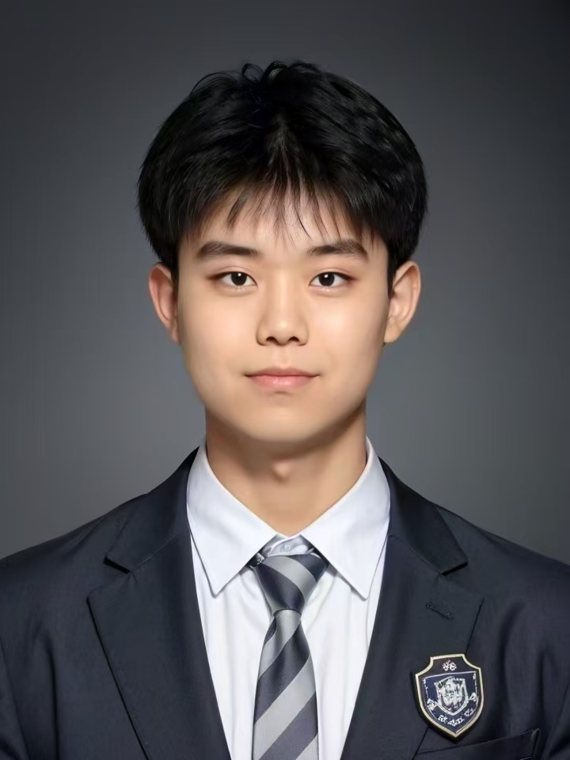

新媒体增长与产品运营
把内容做扎实
把业务想完整
我是杨戴霖，市场营销本科，现居上海。参与运动健康、汽车、企业服务与多款软件产品的运营，擅长从需求里找选题，用内容把产品价值讲清楚。

AI 运营闭环实践人主导判断，AI 扩展执行
01
内容生产
脚本、分镜与参数化
02
质检校验
规格、画面与音轨
03
模板沉淀
可复用参数与知识库
04
复盘迭代
用户行为与转化漏斗
多模态内容制作AI 工作流编排产品与增长思维
工作经历
内容、产品与业务协同
2025.12 至今2026年7月转正
上海众调信息科技有限公司
新媒体运营与产品内容
负责汽车、军人、企业服务与低空经济等多垂类内容策划及视频制作，累计播放2000万+，部门全部账号累计线索1000+；推进AI内容生产、质检与模板复用。
2025.07 至2025.12产品实习
上海众调信息科技有限公司
众寻 AI 产品相关实践
参与账号绑定与AI私信等需求和迭代：将绑定路径从5步缩至2步，推动绑定成功率由50%提升至96%、新用户流失率由40%降至8%；完成AI私信升级MRD与核心指标定义。
2024.09 至2025.06品牌运营实践
上海征风科技有限公司
RoomFit 运动健康品牌
负责达人开发与管理、电商运营及内容策划，参与小红书13.9万粉丝和抖音5.6万粉丝账号运营；策划超慢跑与听书内容，单篇获赞6.3万、曝光100万+，详情页转化率从1.8%提升至2.37%。
我的工作方式
把一线执行和业务判断连起来
先理解用户
从场景、评论和反馈识别问题，找到内容与产品表达的重点。
再做好内容
选题、脚本、图文视频与平台表达一起考虑，让内容讲得清楚、看得下去。
最后接上业务
关注账号增长、咨询和后续反馈，让运营动作服务于实际业务目标。
湖南工程学院市场营销本科2022.09 至2026.06CET-4
剪映Excel 与飞书表格ChatGPTClaudeCodexComfyUIRemotion 参数化视频AIGC 质检与知识库
最新版简历与项目成果
简历下载
最新版 4 页 PDF